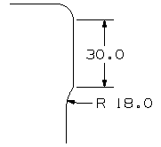
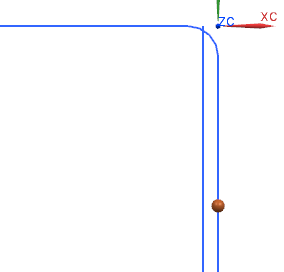
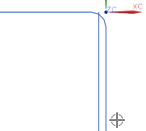
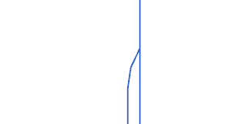

创建轮廓的最后一段
-
放大模型的右上角。

您将使用2 曲线圆角在最右端的竖直直线与平行于它的直线之间创建轮廓最后一个圆弧。

两条竖直直线间的圆弧可以像您在上端直线上创建圆弧那样创建。
但是有另一种创建这个圆弧的方法，创建通过一个点的圆角。
把2 曲线圆弧中的一条曲线替换为一个点以定义圆角一端。

您通过它的半径值以及您选择的点(1)和曲线(2)来控制圆角形状。
-
在曲线倒圆对话框的半径输入框中，键入18。
-
点击点构造器。
圆角的上端点必须放置在距离竖直直线当前上端点下方30 mm 处。

XC 值已被设置为0。
-
在 YC 输入框中，键入–36。
-
点击确定。

位于竖直直线上的点已定义，圆角将通过这个点并与稍后您要修剪的直线连接。
-
点击返回以回到曲线倒圆对话框。(译者注：可能有的读者会看到后视图而不是返回，这绝对是机器翻译的产物，因为两者的英文原文都是 Back)
-
选择内侧的竖直直线。
-
点击合适的位置以指定圆角中心。

圆角已创建，内侧竖直直线被修剪，外侧直线未被修剪，因为它并没有作为圆角创建的一部分被选取。
